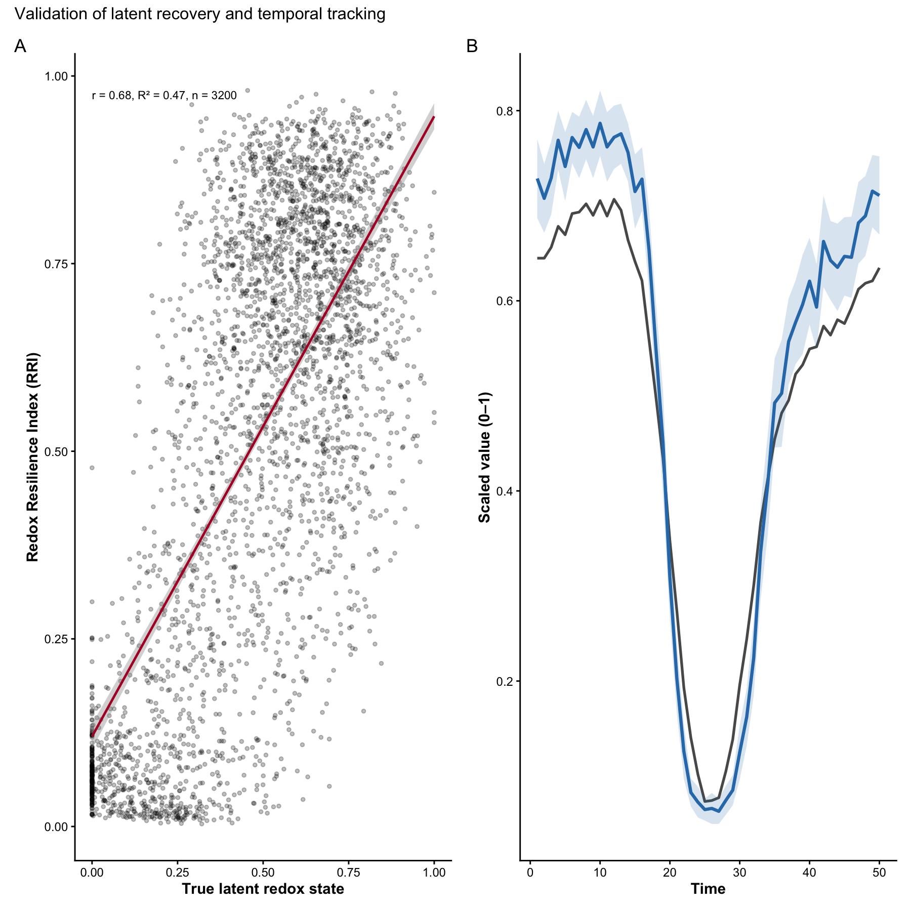
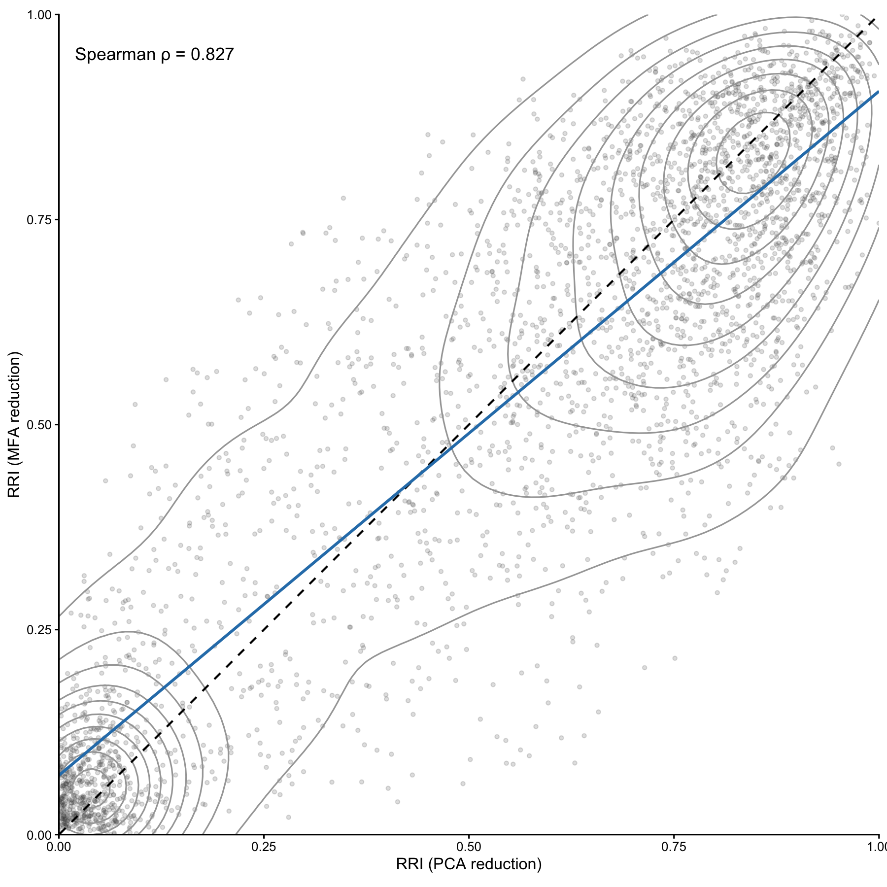
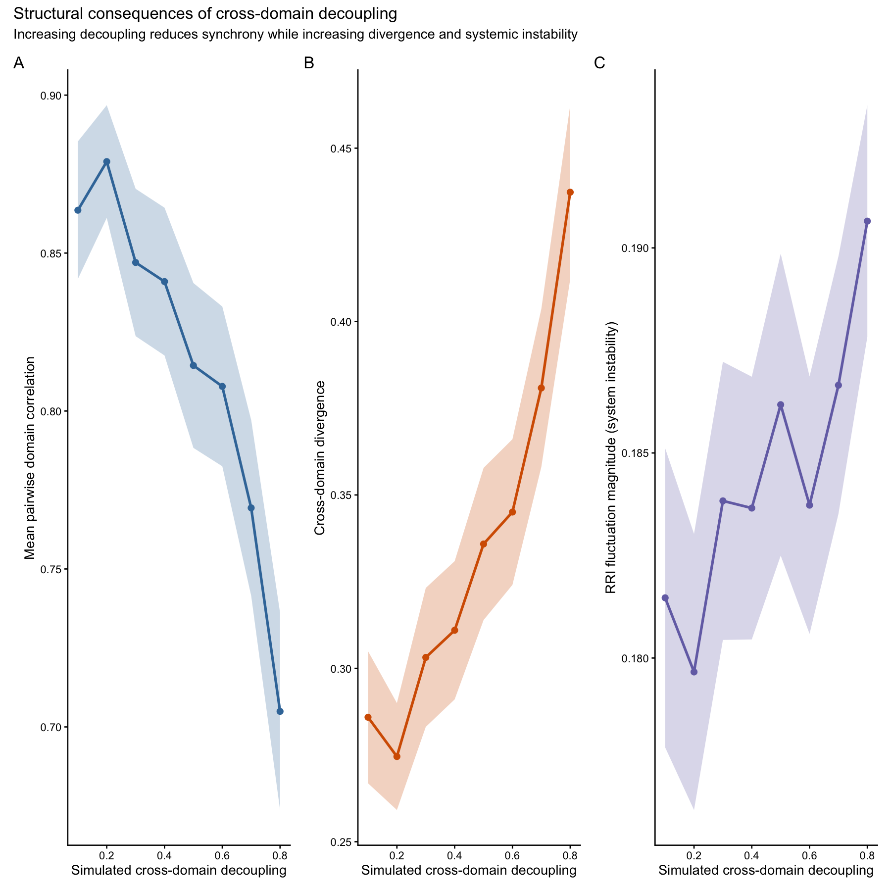
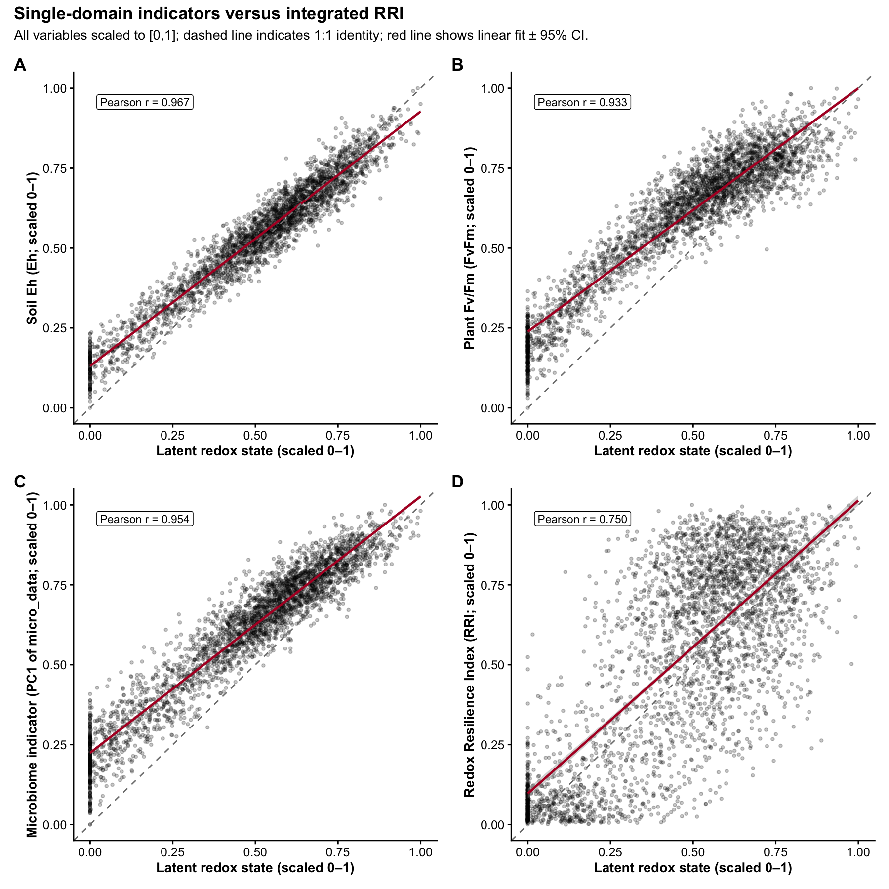

Overview
RedoxRRI formalises holobiont resilience as coordinated redox buffering across plant, soil, and microbial compartments. Rather than analysing each domain independently, the framework models resilience as an emergent, cross-domain property that can be expressed either as a scalar index (RRI) or as a compositional allocation in simplex space.
RedoxRRI provides a transparent and extensible framework to quantify holobiont redox resilience by integrating three complementary domains:
- Plant physiology (oxidative / nitrosative buffering and stress traits)
- Soil redox stability (Eh and redox-coupled chemistry)
- Microbial resilience
Microbial resilience, represented as a single blended domain that can incorporate: microbial abundance or functional composition (micro_data) microbial network organization (igraph network metrics) The primary output of the package is: a per-sample Redox Resilience Index (RRI) scaled to [0,1]) a ternary-ready compositional representation (Physio, Soil, Micro) with row sums equal to 1
an optional system-level index stored as attr(x, “RRI_index”)
Conceptual model
Domain-level aggregation implemented in
rri_pipeline_st()
Each domain (Physiology, Soil, and Microbial) is first summarized into a one-dimensional latent score per sample using a user-selected method (e.g., PCA, FA, UMAP, or WGCNA). These latent scores are then scaled to the range [0, 1].
The Redox Resilience Index (RRI) is computed as a weighted linear combination of the scaled domain scores. The domain weights are user-defined and must sum to one. Higher RRI values indicate samples with stronger physiological buffering, greater soil redox stability, and higher microbial resilience relative to other samples in the same dataset.
Optional coupling terms can be included to capture coherence among domains, allowing the index to reflect not only domain magnitudes but also their agreement or joint stability.
Microbial domain as a blended score
To preserve a three-part (Physiology-Soil-Microbial) ternary representation, microbial resilience is modeled as a single blended domain score.
When both microbial abundance (or functional composition) data and
microbial network data are available, the microbial domain score is
computed as a weighted blend of the two components. The parameter
alpha_micro controls their relative contribution:
-
alpha_micro = 1: abundance or functional composition only
-
alpha_micro = 0: network structure only
-
alpha_micro = 0.5: equal contribution (default)
This design allows flexible emphasis on microbial composition, microbial organization, or both, while maintaining a consistent three-domain representation suitable for compositional and ternary visualization.
Simulated example data
All data used in this vignette are fully simulated and are provided solely for demonstration and testing purposes.
generated using simulate_redox_holobiont() and mimics
qualitative properties of redox-ecological systems, including: correlated plant physiological traits soil redox gradients and stability microbial functional heterogeneity spatial grouping and temporal structure The simulation does not represent any real experiment, species, site, or ecosystem.
Reproducibility
All analyses in this vignette are fully reproducible and rely only on simulated data generated within the package.
## Warning: package 'dplyr' was built under R version 4.5.2##
## Attaching package: 'dplyr'## The following objects are masked from 'package:stats':
##
## filter, lag## The following objects are masked from 'package:base':
##
## intersect, setdiff, setequal, union## Warning: package 'tibble' was built under R version 4.5.2
if (!requireNamespace("patchwork", quietly = TRUE)) {
message("Optional package 'patchwork' not installed.")
}
set.seed(1342)
sim <- simulate_redox_holobiont()
# sim <- simulate_redox_holobiont(seed = 1)
str(sim, max.level = 1)## List of 6
## $ id :'data.frame': 600 obs. of 4 variables:
## $ ROS_flux :'data.frame': 600 obs. of 4 variables:
## $ Eh_stability:'data.frame': 600 obs. of 5 variables:
## $ micro_data :'data.frame': 600 obs. of 60 variables:
## $ latent_truth: num [1:600] 0.705 0.804 0.849 0.674 0.445 ...
## $ graph : NULLThe simulated object contains: ROS_flux: plant physiological traits (samples × variables) Eh_stability: soil redox variables micro_data: microbial functional features id: sample metadata (spatial and temporal structure) graph (optional): an igraph network or list of networks
Computing the Redox Resilience Index
Resistance = immediate deviation in redox potential after disturbance Resilience = rate or magnitude of redox recovery
if (!requireNamespace("FactoMineR", quietly = TRUE)) {
knitr::opts_chunk$set(eval = FALSE)
}
res <- rri_pipeline_st(
ROS_flux = sim$ROS_flux,
Eh_stability = sim$Eh_stability,
micro_data = sim$micro_data,
id = sim$id,
direction_phys = "auto",
direction_anchor_phys = "FvFm",
direction_soil = "auto",
direction_anchor_soil = "Eh"
)Interpreting the compositional output
The compositional output is stored in res$row_scores_comp.
head(res$row_scores_comp)## Physio Soil Micro RRI
## 1 0.5260730 0.4553936 0.018533365 0.7570227
## 2 0.4299748 0.5613843 0.008640927 0.7837603
## 3 0.4647108 0.5148212 0.020468039 0.8275326
## 4 0.4483013 0.5031847 0.048513952 0.8190651
## 5 0.3990414 0.4445511 0.156407447 0.4873383
## 6 0.4346432 0.4378077 0.127549110 0.6696186The domain components satisfy:
## [1] 1 1 1 1 1 1Microbial subcomponents
When microbial abundance and/or network data are available, the output also includes the corresponding latent scores:
## Min. 1st Qu. Median Mean 3rd Qu. Max.
## 0.00000 0.08426 0.15366 0.20827 0.26940 1.00000Ternary visualization
This plot requires suggested packages: ggtern, ggplot2, and viridis.
if (requireNamespace("ggtern", quietly = TRUE) &&
requireNamespace("ggplot2", quietly = TRUE) &&
requireNamespace("patchwork", quietly = TRUE) &&
requireNamespace("viridis", quietly = TRUE)) {
pt1<- plot_RRI_ternary(res$row_scores_comp)
} else {
message("Install ggtern, ggplot2, and viridis to enable ternary plotting.")
}## Warning in ggplot2::geom_point(data = centroid, ggplot2::aes(x = .data$Physio,
## : Ignoring unknown aesthetics: zChoosing latent-dimension methods
Different domains may justify different latent representations: physiology: pca, fa soil: pca, wgcna (when co-regulated redox syndromes are expected) microbial abundance: pca, nmf, wgcna nonlinear regimes: umap
Below we illustrate alternative specifications when suggested packages are available.
specA <- res
if (requireNamespace("WGCNA", quietly = TRUE)) {
specA <- rri_pipeline_st(
ROS_flux = sim$ROS_flux,
Eh_stability = sim$Eh_stability,
micro_data = sim$micro_data,
graph = sim$graph,
alpha_micro = 0.6,
method_phys = "pca",
method_soil = "wgcna",
method_micro = "pca"
)
specA$meta$rri_index
} else {
message("WGCNA not installed; skipping example.")
}## Power SFT.R.sq slope truncated.R.sq mean.k. median.k. max.k.
## 1 1 0.00558 -6.69 -0.22900 2.190000 2.140000 2.59000
## 2 2 0.01700 -5.89 -0.22900 1.240000 1.190000 1.70000
## 3 3 0.05330 -7.32 -0.17300 0.725000 0.681000 1.12000
## 4 4 0.06360 -6.14 -0.16500 0.437000 0.402000 0.74200
## 5 5 0.07340 -5.40 -0.15600 0.270000 0.244000 0.49600
## 6 6 0.08250 -4.89 -0.14600 0.171000 0.151000 0.33300
## 7 7 0.09110 -4.50 -0.13700 0.110000 0.096000 0.22500
## 8 8 0.14100 -5.20 -0.06090 0.071700 0.061800 0.15300
## 9 9 0.14900 -4.82 -0.05540 0.047400 0.040300 0.10500
## 10 10 0.15500 -4.49 -0.05040 0.031700 0.026500 0.07170
## 11 12 0.16500 -3.96 -0.04140 0.014500 0.011800 0.03410
## 12 14 0.02940 -2.06 -0.05740 0.006830 0.005350 0.01640
## 13 16 0.05160 -2.53 -0.01710 0.003270 0.002460 0.00797
## 14 18 0.06030 -2.52 0.00605 0.001580 0.001140 0.00390
## 15 20 0.06890 -2.50 0.02590 0.000776 0.000531 0.00192## [1] 0.3167483
specB <- res
if (requireNamespace("uwot", quietly = TRUE)) {
specB <- rri_pipeline_st(
ROS_flux = sim$ROS_flux,
Eh_stability = sim$Eh_stability,
micro_data = sim$micro_data,
method_phys = "umap",
method_soil = "umap",
method_micro = "pca"
)
specB$meta$rri_index
} else {
message("uwot not installed; skipping example.")
}## [1] 0.495165Second example: compositional geometry and temporal resilience
In this example, we illustrate three advanced features of RedoxRRI:
- Compositional projection using clr geometry
- A covariance-based compensation term
- Rolling temporal resilience dynamics
This specification more closely reflects longitudinal ecological data where resilience is evaluated through time rather than at a single snapshot.
set.seed(91202)
res_adv <- rri_pipeline_st(
ROS_flux = sim$ROS_flux,
Eh_stability = sim$Eh_stability,
micro_data = sim$micro_data,
id = sim$id,
time_col = "time",
group_cols = c("plot", "depth"),
mode = "rolling",
window = 4,
comp_space = "clr",
add_compensation = TRUE,
compensation_weight = 0.2,
direction_phys = "auto",
direction_anchor_phys = "FvFm",
direction_soil = "auto",
direction_anchor_soil = "Eh"
)
head(res_adv$row_scores_comp)## Physio Soil Micro RRI
## 1 0.5221394 0.4587786 1.908198e-02 0.7487045
## 2 0.4111453 0.5888547 6.222230e-09 0.6874197
## 3 0.4379477 0.5024814 5.957090e-02 0.4486399
## 4 0.3980691 0.5285082 7.342264e-02 0.8333942
## 5 0.4547408 0.4672573 7.800193e-02 0.6265479
## 6 0.4784418 0.4630530 5.850514e-02 0.7512837## [1] 1 1
if (requireNamespace("ggtern", quietly = TRUE) &&
requireNamespace("ggplot2", quietly = TRUE) &&
requireNamespace("viridis", quietly = TRUE)) {
plot_RRI_ternary(
res_adv$row_scores_comp,
centroid_method = "auto"
)
} else {
message("Install ggtern, ggplot2, and viridis to enable ternary plotting.")
}## Warning in ggplot2::geom_point(data = centroid, ggplot2::aes(x = .data$Physio,
## : Ignoring unknown aesthetics: z
set the domain directions as:
direction_phys = “lower_is_better” direction_soil = “lower_is_better” direction_micro = “higher_is_better”
set.seed(47162)
sim <- simulate_redox_holobiont(
seed = 47162,
n_plot = 4,
n_depth = 4,
n_plant = 4,
n_time = 50,
p_micro = 240,
disturbance_strength = 0.6,
decoupling = 0.6,
zero_inflation = 0.4,
MNAR_strength = 0.5,
stochastic_reassembly = TRUE
)
res_main <- rri_pipeline_st(
ROS_flux = sim$ROS_flux,
Eh_stability = sim$Eh_stability,
micro_data = sim$micro_data,
id = sim$id,
time_col = "time",
group_cols = c("plot", "depth", "plant_id"),
mode = "snapshot",
reducer = "mfa",
scaling = "pnorm",
comp_space = "clr",
add_compensation = TRUE,
compensation_weight = 0.2,
direction_phys = "lower_is_better",
direction_soil = "lower_is_better",
direction_micro = "higher_is_better"
)
df_val <- tibble::tibble(
latent = sim$latent_truth,
rri = res_main$row_scores$RRI,
time = sim$id$time,
plot = sim$id$plot,
depth = sim$id$depth,
plant_id = sim$id$plant_id
)
cor_complete <- function(x, y, method = "pearson") {
stats::cor(x, y, use = "complete.obs", method = method)
}
n_obs <- nrow(df_val)
cor_val <- cor_complete(df_val$latent, df_val$rri)
lm_fit <- stats::lm(rri ~ latent, data = df_val)
r_sq <- summary(lm_fit)$r.squared
stat_label <- paste0(
"r = ", round(cor_val, 2),
", R² = ", round(r_sq, 2),
", n = ", n_obs
)
p2A <- ggplot2::ggplot(df_val, ggplot2::aes(x = latent, y = rri)) +
ggplot2::geom_point(alpha = 0.25, size = 1.1) +
ggplot2::geom_smooth(
method = "lm",
se = TRUE,
color = "#B2182B",
linewidth = 0.9
) +
ggplot2::annotate(
"text",
x = min(df_val$latent, na.rm = TRUE),
y = max(df_val$rri, na.rm = TRUE),
hjust = 0,
vjust = 1,
size = 3.2,
label = stat_label
) +
ggplot2::labs(
x = "True latent redox state",
y = "Redox Resilience Index (RRI)"
) +
theme_ems()
df_ts <- df_val |>
dplyr::group_by(time) |>
dplyr::summarise(
latent_mean = mean(latent, na.rm = TRUE),
rri_mean = mean(rri, na.rm = TRUE),
rri_se = stats::sd(rri, na.rm = TRUE) / sqrt(dplyr::n()),
.groups = "drop"
) |>
dplyr::mutate(
rri_lo = rri_mean - 1.96 * rri_se,
rri_hi = rri_mean + 1.96 * rri_se
)
p2B <- ggplot2::ggplot(df_ts, ggplot2::aes(x = time)) +
ggplot2::geom_line(
ggplot2::aes(y = latent_mean),
color = "grey35",
linewidth = 1
) +
ggplot2::geom_ribbon(
ggplot2::aes(ymin = rri_lo, ymax = rri_hi),
fill = "#2C7BB6",
alpha = 0.18
) +
ggplot2::geom_line(
ggplot2::aes(y = rri_mean),
color = "#2C7BB6",
linewidth = 1.2
) +
ggplot2::labs(
x = "Time",
y = "Scaled value (0–1)"
) +
theme_ems()
p2 <- p2A + p2B +
patchwork::plot_annotation(
title = "Validation of latent recovery and temporal tracking",
tag_levels = "A"
)
p2## `geom_smooth()` using formula = 'y ~ x'
Compensation robustness
## Warning: package 'purrr' was built under R version 4.5.2## Warning: package 'ggplot2' was built under R version 4.5.2
scale01 <- function(x) {
rng <- range(x, na.rm = TRUE)
if (diff(rng) == 0) {
return(rep(0.5, length(x)))
}
(x - rng[1]) / diff(rng)
}
cor_complete <- function(x, y, method = "spearman") {
stats::cor(x, y, use = "complete.obs", method = method)
}
# Simulate one reference dataset
set.seed(4716254)
sim <- simulate_redox_holobiont(
seed = 4716254,
n_plot = 4,
n_depth = 4,
n_plant = 4,
n_time = 50,
p_micro = 240,
disturbance_strength = 0.6,
decoupling = 0.6,
zero_inflation = 0.4,
MNAR_strength = 0.5,
stochastic_reassembly = TRUE
)
# MFA-based RRI
res_mfa <- rri_pipeline_st(
ROS_flux = sim$ROS_flux,
Eh_stability = sim$Eh_stability,
micro_data = sim$micro_data,
id = sim$id,
time_col = "time",
group_cols = c("plot", "depth", "plant_id"),
mode = "snapshot",
reducer = "mfa",
scaling = "pnorm",
comp_space = "clr",
add_compensation = TRUE,
compensation_weight = 0.2,
direction_phys = "lower_is_better",
direction_soil = "lower_is_better",
direction_micro = "higher_is_better"
)
# PCA / per-domain RRI
res_pca <- rri_pipeline_st(
ROS_flux = sim$ROS_flux,
Eh_stability = sim$Eh_stability,
micro_data = sim$micro_data,
id = sim$id,
time_col = "time",
group_cols = c("plot", "depth", "plant_id"),
mode = "snapshot",
reducer = "per_domain",
scaling = "pnorm",
comp_space = "clr",
add_compensation = TRUE,
compensation_weight = 0.2,
direction_phys = "lower_is_better",
direction_soil = "lower_is_better",
direction_micro = "higher_is_better"
)
# Prepare comparison dataframe
df_fig3 <- tibble(
rri_pca = scale01(res_pca$row_scores$RRI),
rri_mfa = scale01(res_mfa$row_scores$RRI)
)
rho <- cor_complete(df_fig3$rri_pca, df_fig3$rri_mfa, method = "spearman")
# Figure 3
fig3 <- ggplot(df_fig3, aes(x = rri_pca, y = rri_mfa)) +
geom_point(alpha = 0.18, size = 1.2, color = "grey30") +
stat_density_2d(
color = "grey65",
linewidth = 0.6
) +
geom_abline(
slope = 1,
intercept = 0,
linetype = "dashed",
color = "black",
linewidth = 0.8
) +
geom_smooth(
method = "lm",
se = FALSE,
color = "#2C7FB8",
linewidth = 1.1
) +
annotate(
"text",
x = 0.02,
y = 0.96,
hjust = 0,
vjust = 1,
size = 5,
label = paste0("Spearman \u03c1 = ", round(rho, 3))
) +
coord_equal(xlim = c(0, 1), ylim = c(0, 1), expand = FALSE) +
labs(
x = "RRI (PCA reduction)",
y = "RRI (MFA reduction)"
) +
theme_classic(base_size = 13)
fig3## `geom_smooth()` using formula = 'y ~ x'
###Structural consequences of cross-domain decoupling
To understand how cross-domain coupling contributes to holobiont stability, we simulate systems with increasing levels of domain decoupling and quantify three structural properties of the resulting RRI decomposition:
- Mean pairwise correlation among domains
- Net covariance contribution to aggregate variance
- Cross-domain coordination strength
Higher decoupling should reduce coordination among domains and therefore we expect these metrics to decline with increasing decoupling.
## Warning: package 'tidyr' was built under R version 4.5.2## Warning: package 'readr' was built under R version 4.5.2## Warning: package 'lubridate' was built under R version 4.5.2## ── Attaching core tidyverse packages ──────────────────────── tidyverse 2.0.0 ──
## ✔ forcats 1.0.1 ✔ stringr 1.6.0
## ✔ lubridate 1.9.5 ✔ tidyr 1.3.2
## ✔ readr 2.2.0
## ── Conflicts ────────────────────────────────────────── tidyverse_conflicts() ──
## ✖ dplyr::filter() masks stats::filter()
## ✖ dplyr::lag() masks stats::lag()
## ℹ Use the conflicted package (<http://conflicted.r-lib.org/>) to force all conflicts to become errors
library(patchwork)
# decoupling gradient
dec_grid <- seq(0.1, 0.8, by = 0.1)
# number of stochastic replicates
n_rep <- 50
compute_structure <- function(decoupling, rep){
sim <- simulate_redox_holobiont(
seed = 1000 + rep + round(decoupling * 100),
decoupling = decoupling
)
res <- rri_pipeline_st(
ROS_flux = sim$ROS_flux,
Eh_stability = sim$Eh_stability,
micro_data = sim$micro_data,
reducer = "mfa",
scaling = "pnorm",
comp_space = "clr",
add_compensation = TRUE,
compensation_weight = 0.2
)
domains <- res$row_scores[, c("Physio","Soil","Micro")]
# standardize domains
domains <- scale(domains)
# Panel A — synchrony
cor_mat <- cor(domains)
mean_corr <- mean(cor_mat[upper.tri(cor_mat)])
# Panel B — domain divergence
domain_divergence <- mean(apply(domains, 1, sd))
# Panel C — system instability
rri_instability <- mean(abs(diff(res$row_scores$RRI)), na.rm = TRUE)
tibble(
decoupling = decoupling,
mean_corr = mean_corr,
domain_divergence = domain_divergence,
rri_instability = rri_instability
)
}
# run simulations
df <- expand_grid(
decoupling = dec_grid,
rep = 1:n_rep
) |>
pmap_dfr(~compute_structure(..1, ..2))
# rename to avoid summarise masking bug
df <- df |> rename(mean_corr_raw = mean_corr)
# summarise statistics
df_summary <- df |>
group_by(decoupling) |>
summarise(
mean_corr = mean(mean_corr_raw),
corr_se = sd(mean_corr_raw) / sqrt(n()),
div_mean = mean(domain_divergence),
div_se = sd(domain_divergence) / sqrt(n()),
instab_mean = mean(rri_instability),
instab_se = sd(rri_instability) / sqrt(n()),
.groups = "drop"
)
# Panel A — domain synchrony
pA <- ggplot(df_summary, aes(decoupling, mean_corr)) +
geom_ribbon(
aes(ymin = mean_corr - corr_se,
ymax = mean_corr + corr_se),
fill = "#3b78a8",
alpha = 0.25
) +
geom_line(color = "#3b78a8", linewidth = 1) +
geom_point(color = "#3b78a8", size = 2) +
labs(
x = "Simulated cross-domain decoupling",
y = "Mean pairwise domain correlation"
) +
theme_classic()
# Panel B — domain divergence
pB <- ggplot(df_summary, aes(decoupling, div_mean)) +
geom_ribbon(
aes(ymin = div_mean - div_se,
ymax = div_mean + div_se),
fill = "#d55e00",
alpha = 0.25
) +
geom_line(color = "#d55e00", linewidth = 1) +
geom_point(color = "#d55e00", size = 2) +
labs(
x = "Simulated cross-domain decoupling",
y = "Cross-domain divergence"
) +
theme_classic()
# Panel C — system instability
pC <- ggplot(df_summary, aes(decoupling, instab_mean)) +
geom_ribbon(
aes(ymin = instab_mean - instab_se,
ymax = instab_mean + instab_se),
fill = "#7570b3",
alpha = 0.25
) +
geom_line(color = "#7570b3", linewidth = 1) +
geom_point(color = "#7570b3", size = 2) +
labs(
x = "Simulated cross-domain decoupling",
y = "RRI fluctuation magnitude (system instability)"
) +
theme_classic()
# combine panels
fig4 <- (pA | pB | pC) +
plot_annotation(
title = "Structural consequences of cross-domain decoupling",
subtitle = "Increasing decoupling reduces synchrony while increasing divergence and systemic instability",
tag_levels = "A"
)
fig4
| Panel | Metric | Interpretation |
|---|---|---|
| A | Mean pairwise correlation | Domain synchrony |
| B | Domain divergence | Separation of responses |
| C | RRI fluctuation magnitude | System instability |
####Single-domain indicators vs integrated RRI plot × depth × plant_id × time
if (requireNamespace("dplyr", quietly = TRUE)) library(dplyr)
if (requireNamespace("tibble", quietly = TRUE)) library(tibble)
if (requireNamespace("patchwork", quietly = TRUE)) library(patchwork)
if (requireNamespace("ggplot2", quietly = TRUE)) library(ggplot2)
# ---- Helpers ----
scale01 <- function(x) {
x <- as.numeric(x)
r <- range(x, na.rm = TRUE)
if (!all(is.finite(r)) || diff(r) == 0) return(rep(0.5, length(x)))
(x - r[1]) / diff(r)
}
pick_col <- function(df, patterns, df_name = deparse(substitute(df))) {
stopifnot(is.data.frame(df))
nm <- names(df)
hit <- which(Reduce(`|`, lapply(patterns, function(p) grepl(p, nm, ignore.case = TRUE))))
if (length(hit) == 0) {
stop(
"Could not find a matching column in ", df_name, ".\n",
"Tried patterns: ", paste(patterns, collapse = ", "), "\n",
"Available columns: ", paste(nm, collapse = ", ")
)
}
if (length(hit) > 1) {
# Prefer exact-ish matches if present
exact <- hit[grepl(paste0("^(", paste(patterns, collapse = "|"), ")$"), nm[hit], ignore.case = TRUE)]
if (length(exact) >= 1) hit <- exact[1] else hit <- hit[1]
}
nm[hit]
}
micro_indicator_pc1 <- function(micro_data) {
if (is.null(micro_data)) return(rep(NA_real_, 0))
micro_data <- as.data.frame(micro_data)
# numeric matrix
X <- suppressWarnings(as.matrix(micro_data))
storage.mode(X) <- "double"
# handle all-NA columns
keep <- colSums(is.finite(X)) > 0
X <- X[, keep, drop = FALSE]
if (ncol(X) == 0) return(rep(NA_real_, nrow(micro_data)))
# stabilize counts/abundances
X <- log1p(pmax(X, 0))
# remove zero-variance columns
sds <- apply(X, 2, stats::sd, na.rm = TRUE)
X <- X[, is.finite(sds) & sds > 0, drop = FALSE]
if (ncol(X) == 0) return(rep(NA_real_, nrow(micro_data)))
pc <- stats::prcomp(X, center = TRUE, scale. = TRUE)
as.numeric(pc$x[, 1])
}
make_panel <- function(df, y_col, y_lab, tag, add_identity = TRUE) {
r_val <- stats::cor(df$latent, df[[y_col]], use = "complete.obs", method = "pearson")
p <- ggplot(df, aes(x = latent, y = .data[[y_col]])) +
geom_point(alpha = 0.22, size = 0.9, color = "black") +
geom_smooth(method = "lm", se = TRUE, color = "#B2182B", linewidth = 0.9) +
{if (isTRUE(add_identity)) geom_abline(slope = 1, intercept = 0, linetype = "dashed", color = "grey50")} +
annotate(
"label",
x = 0.02, y = 0.98,
hjust = 0, vjust = 1,
size = 3.2,
label = paste0("Pearson r = ", format(round(r_val, 3), nsmall = 3)),
fill = "white",
label.size = 0.2
) +
coord_cartesian(xlim = c(0, 1), ylim = c(0, 1)) +
labs(x = "Latent redox state (scaled 0–1)", y = y_lab) +
theme_ems() +
theme(
plot.tag = element_text(face = "bold", size = 14),
axis.title = element_text(size = 11),
axis.text = element_text(size = 10)
) +
labs(tag = tag)
p
}
# Build dataframe
# Soil: prefer "Eh" if present; otherwise "eh" substring
eh_col <- pick_col(sim$Eh_stability, patterns = c("Eh", "eh", "redox"), df_name = "sim$Eh_stability")
# Plant: prefer "FvFm", "Fv/Fm", then any photochemical efficiency-like pattern
fvfm_col <- pick_col(
sim$ROS_flux,
patterns = c("FvFm", "Fv/Fm", "fvfm", "photochem", "PSII"),
df_name = "sim$ROS_flux"
)
micro_pc1 <- micro_indicator_pc1(sim$micro_data)
df_s2 <- tibble(
latent = scale01(sim$latent_truth),
eh = scale01(sim$Eh_stability[[eh_col]]),
fvfm = scale01(sim$ROS_flux[[fvfm_col]]),
micro_pc1 = scale01(micro_pc1),
rri = scale01(res_main$row_scores$RRI)
)
# Panels
pA <- make_panel(df_s2, "eh", paste0("Soil Eh (", eh_col, "; scaled 0–1)"), tag = "A")## Warning in annotate("label", x = 0.02, y = 0.98, hjust = 0, vjust = 1, size =
## 3.2, : Ignoring unknown parameters: `label.size`
pB <- make_panel(df_s2, "fvfm", paste0("Plant Fv/Fm (", fvfm_col, "; scaled 0–1)"), tag = "B")## Warning in annotate("label", x = 0.02, y = 0.98, hjust = 0, vjust = 1, size =
## 3.2, : Ignoring unknown parameters: `label.size`
pC <- make_panel(df_s2, "micro_pc1", "Microbiome indicator (PC1 of micro_data; scaled 0–1)", tag = "C")## Warning in annotate("label", x = 0.02, y = 0.98, hjust = 0, vjust = 1, size =
## 3.2, : Ignoring unknown parameters: `label.size`
pD <- make_panel(df_s2, "rri", "Redox Resilience Index (RRI; scaled 0–1)", tag = "D")## Warning in annotate("label", x = 0.02, y = 0.98, hjust = 0, vjust = 1, size =
## 3.2, : Ignoring unknown parameters: `label.size`
fig_s2 <- (pA | pB) / (pC | pD) +
plot_annotation(
title = "Single-domain indicators versus integrated RRI",
subtitle = "All variables scaled to [0,1]; dashed line indicates 1:1 identity; red line shows linear fit ± 95% CI.",
theme = theme(
plot.title = element_text(face = "bold", size = 14),
plot.subtitle = element_text(size = 11)
)
)
fig_s2## `geom_smooth()` using formula = 'y ~ x'## Warning: Removed 238 rows containing non-finite outside the scale range
## (`stat_smooth()`).## Warning: Removed 238 rows containing missing values or values outside the scale range
## (`geom_point()`).## `geom_smooth()` using formula = 'y ~ x'
## `geom_smooth()` using formula = 'y ~ x'
## `geom_smooth()` using formula = 'y ~ x'
| Indicator | r |
|---|---|
| Soil Eh | 0.97 |
| Plant Fv/Fm | 0.93 |
| Microbiome PC1 | 0.95 |
| RRI | 0.75 |
###RRI plotting
# ---- Theme ----
theme_ems <- function(base_size = 12) {
theme_classic(base_size = base_size) +
theme(
plot.title = element_text(face = "bold"),
axis.title = element_text(face = "bold"),
legend.title = element_text(face = "bold"),
panel.grid = element_blank()
)
}
res_snap <- rri_pipeline_st(
ROS_flux = sim$ROS_flux,
Eh_stability = sim$Eh_stability,
micro_data = sim$micro_data,
id = sim$id,
mode = "snapshot",
reducer = "per_domain",
scaling = "pnorm",
comp_space = "clr"
)
p_A <- plot_RRI_ternary(
res_snap$row_scores_comp,
point_size = 2.6,
point_alpha = 0.65
)## Warning in ggplot2::geom_point(data = centroid, ggplot2::aes(x = .data$Physio,
## : Ignoring unknown aesthetics: z
res_roll <- rri_pipeline_st(
ROS_flux = sim$ROS_flux,
Eh_stability = sim$Eh_stability,
micro_data = sim$micro_data,
id = sim$id,
mode = "rolling",
time_col = "time",
group_cols = c("plot","depth","plant_id"),
window = 3,
reducer = "per_domain",
scaling = "pnorm",
comp_space = "clr"
)
p_B <- plot_RRI_ternary(
res_roll$row_scores_comp,
point_size = 2.6,
point_alpha = 0.65
)## Warning in ggplot2::geom_point(data = centroid, ggplot2::aes(x = .data$Physio,
## : Ignoring unknown aesthetics: z
p_A <- plot_RRI_ternary(
res_snap$row_scores_comp,
point_size = 2.6,
point_alpha = 0.65
) +
ggtern::annotate(
"text",
x = -0.02,
y = 1.96,
z = -0.13,
label = "A",
size = 6,
fontface = "plain"
)## Warning in ggplot2::geom_point(data = centroid, ggplot2::aes(x = .data$Physio,
## : Ignoring unknown aesthetics: z
p_B <- plot_RRI_ternary(
res_roll$row_scores_comp,
point_size = 2.6,
point_alpha = 0.65
) +
ggtern::annotate(
"text",
x = -0.02,
y = 1.96,
z = -0.13,
label = "B",
size = 6,
fontface = "plain"
)## Warning in ggplot2::geom_point(data = centroid, ggplot2::aes(x = .data$Physio,
## : Ignoring unknown aesthetics: zInterpretation
The ternary representation expresses the relative allocation of holobiont redox buffering among plant physiology, soil chemistry, and microbial resilience.
When comp_space = "clr" is used, compositional geometry
follows Aitchison principles, and the centroid is computed in clr space
when available. This ensures geometric coherence and avoids spurious
averaging in simplex space.
The optional compensation term increases RRI when negative cross-domain covariance is detected, reflecting compensatory dynamics among domains.
Sensitivity to domain weights
res_w1 <- rri_pipeline_st(
ROS_flux = sim$ROS_flux,
Eh_stability = sim$Eh_stability,
micro_data = sim$micro_data,
w1 = 0.6, w2 = 0.25, w3 = 0.15
)
res_w1$meta$rri_index## [1] 0.45387Validation and robustness diagnostics
## Validation utilities
### 1. Latent recovery
rri_latent_correlation(res_w1, sim$latent_truth)## [1] -0.9417382
## Compensation strength
rri_compensation_index(res_w1)## [1] 0.3186399
## Sensitivity of RRI rankings to aggregation weights
sens <- rri_sensitivity(res_w1)
sens## weight_physio weight_soil weight_micro spearman_rank_correlation
## 1 0.2 0.40 0.40 0.5834016
## 2 0.3 0.35 0.35 0.8886380
## 3 0.4 0.30 0.30 0.9795185
## 4 0.5 0.25 0.25 0.9963836
## 5 0.6 0.20 0.20 0.9983571Stability of RRI
RRI rankings remain highly stable (>0.9 Spearman correlation) under moderate perturbations of domain weighting, indicating structural robustness of the aggregation scheme.
if (requireNamespace("ggplot2", quietly = TRUE)) {
library(ggplot2)
ggplot(sens,
aes(x = weight_physio,
y = spearman_rank_correlation)) +
# Stability reference band
geom_hline(yintercept = 0.9,
linetype = "dashed",
linewidth = 0.6,
colour = "grey40") +
# Smooth curve
geom_line(linewidth = 1.2, colour = "#3B0F70") +
# Points
geom_point(size = 3.5,
shape = 21,
fill = "#FDE725",
colour = "black",
stroke = 0.6) +
# Tight limits
scale_y_continuous(
limits = c(min(0.85, min(sens$spearman_rank_correlation, na.rm = TRUE)),
1),
expand = expansion(mult = c(0.02, 0.02))
) +
scale_x_continuous(
expand = expansion(mult = c(0.02, 0.02))
) +
labs(
title = "Robustness of RRI to Domain Weight Perturbation",
subtitle = "Spearman rank stability relative to baseline configuration",
x = "Weight assigned to Physiology domain",
y = "Spearman rank correlation"
) +
theme_minimal(base_size = 14) +
theme(
plot.title = element_text(face = "bold", size = 15),
plot.subtitle = element_text(size = 12, margin = margin(b = 10)),
axis.title = element_text(face = "bold"),
panel.grid.minor = element_blank(),
panel.grid.major.x = element_blank()
)
} else {
message("Install ggplot2 to visualize sensitivity results.")
}
Practical guidance
A recommended workflow:
- Assemble domain matrices with samples in rows and consistent ordering.
- Choose latent methods appropriate to each domain.
- Decide microbial blending parameter
alpha_micro. - Sensitivity-test domain weights and methods.
- Validate RRI against independent outcomes.
## R version 4.5.1 (2025-06-13)
## Platform: aarch64-apple-darwin20
## Running under: macOS Tahoe 26.3
##
## Matrix products: default
## BLAS: /Library/Frameworks/R.framework/Versions/4.5-arm64/Resources/lib/libRblas.0.dylib
## LAPACK: /Library/Frameworks/R.framework/Versions/4.5-arm64/Resources/lib/libRlapack.dylib; LAPACK version 3.12.1
##
## locale:
## [1] en_US.UTF-8/en_US.UTF-8/en_US.UTF-8/C/en_US.UTF-8/en_US.UTF-8
##
## time zone: Europe/Berlin
## tzcode source: internal
##
## attached base packages:
## [1] stats graphics grDevices utils datasets methods base
##
## other attached packages:
## [1] lubridate_1.9.5 forcats_1.0.1 stringr_1.6.0 readr_2.2.0
## [5] tidyr_1.3.2 tidyverse_2.0.0 ggplot2_4.0.2 patchwork_1.3.2
## [9] purrr_1.2.1 tibble_3.3.1 dplyr_1.2.0 RedoxRRI_0.99.3
## [13] BiocStyle_2.38.0
##
## loaded via a namespace (and not attached):
## [1] gridExtra_2.3 sandwich_3.1-1 rlang_1.1.7
## [4] magrittr_2.0.4 multcomp_1.4-29 otel_0.2.0
## [7] matrixStats_1.5.0 compiler_4.5.1 mgcv_1.9-4
## [10] systemfonts_1.3.1 vctrs_0.7.1 pkgconfig_2.0.3
## [13] fastmap_1.2.0 backports_1.5.0 labeling_0.4.3
## [16] rmarkdown_2.30 tzdb_0.5.0 preprocessCore_1.72.0
## [19] ragg_1.5.0 xfun_0.56 cachem_1.1.0
## [22] jsonlite_2.0.0 flashClust_1.1-4 parallel_4.5.1
## [25] cluster_2.1.8.2 R6_2.6.1 stringi_1.8.7
## [28] bslib_0.10.0 RColorBrewer_1.1-3 compositions_2.0-9
## [31] rpart_4.1.24 jquerylib_0.1.4 estimability_1.5.1
## [34] Rcpp_1.1.1 bookdown_0.46 iterators_1.0.14
## [37] knitr_1.51 zoo_1.8-15 WGCNA_1.74
## [40] base64enc_0.1-6 FNN_1.1.4.1 timechange_0.4.0
## [43] Matrix_1.7-4 splines_4.5.1 nnet_7.3-20
## [46] tidyselect_1.2.1 rstudioapi_0.18.0 yaml_2.3.12
## [49] viridis_0.6.5 doParallel_1.0.17 codetools_0.2-20
## [52] lattice_0.22-9 plyr_1.8.9 withr_3.0.2
## [55] S7_0.2.1 coda_0.19-4.1 evaluate_1.0.5
## [58] foreign_0.8-91 desc_1.4.3 survival_3.8-6
## [61] isoband_0.3.0 ggtern_4.0.0 bayesm_3.1-7
## [64] pillar_1.11.1 BiocManager_1.30.27 tensorA_0.36.2.1
## [67] checkmate_2.3.4 DT_0.34.0 foreach_1.5.2
## [70] generics_0.1.4 hms_1.1.4 scales_1.4.0
## [73] xtable_1.8-8 leaps_3.2 glue_1.8.0
## [76] emmeans_2.0.1 scatterplot3d_0.3-45 Hmisc_5.2-5
## [79] tools_4.5.1 hexbin_1.28.5 data.table_1.18.2.1
## [82] robustbase_0.99-7 RSpectra_0.16-2 fs_1.6.6
## [85] mvtnorm_1.3-3 fastcluster_1.3.0 grid_4.5.1
## [88] impute_1.84.0 colorspace_2.1-2 nlme_3.1-168
## [91] htmlTable_2.4.3 proto_1.0.0 Formula_1.2-5
## [94] cli_3.6.5 latex2exp_0.9.8 textshaping_1.0.4
## [97] viridisLite_0.4.3 uwot_0.2.4 gtable_0.3.6
## [100] DEoptimR_1.1-4 dynamicTreeCut_1.63-1 sass_0.4.10
## [103] digest_0.6.39 ggrepel_0.9.7 TH.data_1.1-5
## [106] FactoMineR_2.13 htmlwidgets_1.6.4 farver_2.1.2
## [109] htmltools_0.5.9 pkgdown_2.2.0 lifecycle_1.0.5
## [112] multcompView_0.1-11 MASS_7.3-65